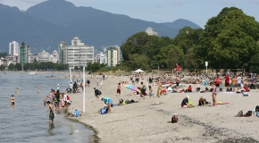
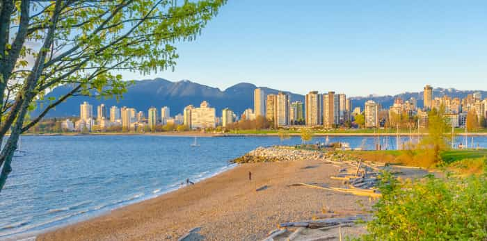

Kitsilano Beach
Kitsilano Beach, known as "Kits" Beach, is located on Cornwall Ave at the north end of Yew St. The Seawall runs along side the beach and Kitsilano Pool is at the west side. Beach parking lot fees are effective 6:00am to 10:00pm unless otherwise posted.
Overnight parking is not permitted.
Features at Kits Beach
- On Seaside Seawall system
- Concession
- Public washrooms
- Tennis courts
- Basketball courts
- Playground
- Swimming raft
- Lifeguards (Victoria Day to Labour Day, late May to early September)
- Water wheelchair
- Pay parking
- Boathouse Waterfront Restaurant
Things to do at Kitsilano Beach
- Dog off-leash areas
- Find all of Vancouver’s dog parks and off-leash areas , whether in your neighbourhood or along the water.
- Ball, field, and floor hockey
- Find out about playing ball hockey, floor hockey, street hockey, and field hockey in Vancouver. Join a team, take a class, or find a field or gym where you can play.
- Basketball
- Find out where to play basketball in Vancouver. Learn about how to book a court for your league or tournament. Join a basketball league.
- Tennis
- Kitsilano Pool is a salt-water, outdoor pool located near the beach in Kitsilano. It is open from Victoria Day weekend to mid-September.
- Seawall
- Enjoy one of Vancouver's most popular destinations and take advantage of all there is to do and see along the Seawall! Download the map and learn more about this scenic path lining the city waterfront.